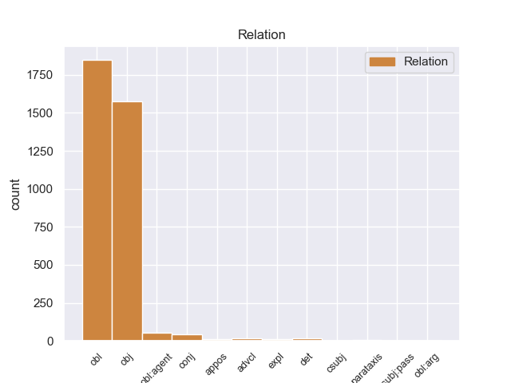
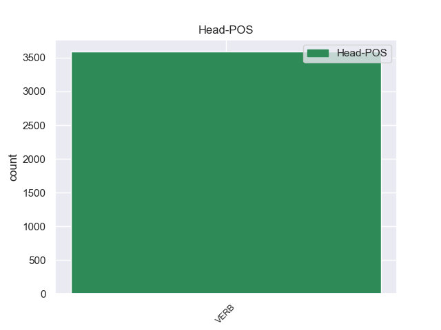

Distribution of features within this leaf



Morphosyntax Rules sorted by frequency.
- When the dependent token is the oblique nominal(obl) of the head token, and the head token is VERB and the dependent token is NOUN, the Case needs to be Acc.
1 Αυτό _ _ _ _ 0 _ _ _
2 μπορεί _ _ _ _ 0 _ _ _
3 να _ _ _ _ 0 _ _ _
4 μην _ _ _ _ 0 _ _ _
5 οδηγήσει _ _ _ _ 0 _ _ _
6 σ _ _ _ _ 0 _ _ _
7 τη _ _ _ _ 0 _ _ _
8 λήξη _ _ _ _ 0 _ _ _
9 του _ _ _ _ 0 _ _ _
10 εν _ _ _ _ 0 _ _ _
11 λόγω _ _ _ _ 0 _ _ _
12 ζητήματος _ _ _ _ 0 _ _ _
13 αλλά _ _ _ _ 0 _ _ _
14 , _ _ _ _ 0 _ _ _
15 σ _ _ _ _ 0 _ _ _
16 τη _ _ _ _ 0 _ _ _
17 μορφή _ _ _ _ 0 _ _ _
18 υπό _ _ _ _ 0 _ _ _
19 την _ _ _ _ 0 _ _ _
20 οποία _ _ _ _ 0 _ _ _
21 την _ _ _ _ 0 _ _ _
22 λάβαμε _ _ _ _ 0 _ _ _
23 , _ _ _ _ 0 _ _ _
24 αυτή _ _ _ _ 0 _ _ _
25 η _ _ _ _ 0 _ _ _
26 αίτηση _ _ _ _ 0 _ _ _
27 άρσης _ _ _ _ 0 _ _ _
28 της _ _ _ _ 0 _ _ _
29 ασυλίας _ _ _ _ 0 _ _ _
30 ήταν _ _ _ _ 0 _ _ _
31 , _ _ _ _ 0 _ _ _
32 κατά _ _ _ _ 0 _ _ _
33 την _ _ _ _ 0 _ _ _
34 άποψη _ _ _ _ 0 _ _ _
35 της _ _ _ _ 0 _ _ _
36 Επιτροπής _ _ _ _ 0 _ _ _
37 Νομικών _ _ _ _ 0 _ _ _
38 Θεμάτων _ _ _ _ 0 _ _ _
39 , _ _ _ _ 0 _ _ _
40 απαράδεκτη _ _ _ _ 0 _ _ _
41 , _ _ _ _ 0 _ _ _
42 άποψη _ _ _ _ 0 _ _ _
43 την _ _ _ _ 0 _ _ _
44 οποία _ _ _ _ 0 _ _ _
45 συνιστώ συνιστώ VERB VERB Aspect=Imp|Mood=Ind|Number=Sing|Person=1|Tense=Pres|VerbForm=Fin|Voice=Act 0 _ _ _
46 σ _ _ _ _ 0 _ _ _
47 το _ _ _ _ 0 _ _ _
48 Σώμα σώμα NOUN NOUN Case=Acc|Gender=Neut|Number=Sing 45 obl _ _
49 να _ _ _ _ 0 _ _ _
50 υιοθετήσει _ _ _ _ 0 _ _ _
51 . _ _ _ _ 0 _ _ _
1 Υπ' _ _ _ _ 0 _ _ _
2 αυτές _ _ _ _ 0 _ _ _
3 τις _ _ _ _ 0 _ _ _
4 συνθήκες _ _ _ _ 0 _ _ _
5 , _ _ _ _ 0 _ _ _
6 η _ _ _ _ 0 _ _ _
7 Επιτροπή _ _ _ _ 0 _ _ _
8 Νομικών _ _ _ _ 0 _ _ _
9 Θεμάτων _ _ _ _ 0 _ _ _
10 , _ _ _ _ 0 _ _ _
11 της _ _ _ _ 0 _ _ _
12 οποίας _ _ _ _ 0 _ _ _
13 τη _ _ _ _ 0 _ _ _
14 θέση _ _ _ _ 0 _ _ _
15 αποδέχομαι _ _ _ _ 0 _ _ _
16 πλήρως _ _ _ _ 0 _ _ _
17 , _ _ _ _ 0 _ _ _
18 προτείνει προτείνω VERB VERB Aspect=Imp|Mood=Ind|Number=Sing|Person=3|Tense=Pres|VerbForm=Fin|Voice=Act 0 _ _ _
19 την _ _ _ _ 0 _ _ _
20 απόρριψη απόρριψη NOUN NOUN Case=Acc|Gender=Fem|Number=Sing 18 obj _ _
21 της _ _ _ _ 0 _ _ _
22 αίτησης _ _ _ _ 0 _ _ _
23 άρσης _ _ _ _ 0 _ _ _
24 της _ _ _ _ 0 _ _ _
25 βουλευτικής _ _ _ _ 0 _ _ _
26 ασυλίας _ _ _ _ 0 _ _ _
27 την _ _ _ _ 0 _ _ _
28 οποία _ _ _ _ 0 _ _ _
29 υπέβαλε _ _ _ _ 0 _ _ _
30 το _ _ _ _ 0 _ _ _
31 γαλλικό _ _ _ _ 0 _ _ _
32 Υπουργείο _ _ _ _ 0 _ _ _
33 Δικαιοσύνης _ _ _ _ 0 _ _ _
34 , _ _ _ _ 0 _ _ _
35 σ _ _ _ _ 0 _ _ _
36 τη _ _ _ _ 0 _ _ _
37 μορφή _ _ _ _ 0 _ _ _
38 υπό _ _ _ _ 0 _ _ _
39 την _ _ _ _ 0 _ _ _
40 οποία _ _ _ _ 0 _ _ _
41 υποβλήθηκε _ _ _ _ 0 _ _ _
42 σ _ _ _ _ 0 _ _ _
43 το _ _ _ _ 0 _ _ _
44 Κοινοβούλιο _ _ _ _ 0 _ _ _
45 . _ _ _ _ 0 _ _ _
1 Αυτό _ _ _ _ 0 _ _ _
2 μπορεί _ _ _ _ 0 _ _ _
3 να _ _ _ _ 0 _ _ _
4 μην _ _ _ _ 0 _ _ _
5 οδηγήσει _ _ _ _ 0 _ _ _
6 σ _ _ _ _ 0 _ _ _
7 τη _ _ _ _ 0 _ _ _
8 λήξη _ _ _ _ 0 _ _ _
9 του _ _ _ _ 0 _ _ _
10 εν _ _ _ _ 0 _ _ _
11 λόγω _ _ _ _ 0 _ _ _
12 ζητήματος _ _ _ _ 0 _ _ _
13 αλλά _ _ _ _ 0 _ _ _
14 , _ _ _ _ 0 _ _ _
15 σ _ _ _ _ 0 _ _ _
16 τη _ _ _ _ 0 _ _ _
17 μορφή _ _ _ _ 0 _ _ _
18 υπό _ _ _ _ 0 _ _ _
19 την _ _ _ _ 0 _ _ _
20 οποία _ _ _ _ 0 _ _ _
21 την _ _ _ _ 0 _ _ _
22 λάβαμε _ _ _ _ 0 _ _ _
23 , _ _ _ _ 0 _ _ _
24 αυτή _ _ _ _ 0 _ _ _
25 η _ _ _ _ 0 _ _ _
26 αίτηση _ _ _ _ 0 _ _ _
27 άρσης _ _ _ _ 0 _ _ _
28 της _ _ _ _ 0 _ _ _
29 ασυλίας _ _ _ _ 0 _ _ _
30 ήταν _ _ _ _ 0 _ _ _
31 , _ _ _ _ 0 _ _ _
32 κατά _ _ _ _ 0 _ _ _
33 την _ _ _ _ 0 _ _ _
34 άποψη _ _ _ _ 0 _ _ _
35 της _ _ _ _ 0 _ _ _
36 Επιτροπής _ _ _ _ 0 _ _ _
37 Νομικών _ _ _ _ 0 _ _ _
38 Θεμάτων _ _ _ _ 0 _ _ _
39 , _ _ _ _ 0 _ _ _
40 απαράδεκτη _ _ _ _ 0 _ _ _
41 , _ _ _ _ 0 _ _ _
42 άποψη _ _ _ _ 0 _ _ _
43 την _ _ _ _ 0 _ _ _
44 οποία οποίος PRON PRON Case=Acc|Gender=Fem|Number=Sing|Person=3|PronType=Rel 50 obj _ _
45 συνιστώ _ _ _ _ 0 _ _ _
46 σ _ _ _ _ 0 _ _ _
47 το _ _ _ _ 0 _ _ _
48 Σώμα _ _ _ _ 0 _ _ _
49 να _ _ _ _ 0 _ _ _
50 υιοθετήσει υιοθετώ VERB VERB Aspect=Perf|Mood=Ind|Number=Sing|Person=3|VerbForm=Fin|Voice=Act 0 _ _ _
51 . _ _ _ _ 0 _ _ _
1 Ο _ _ _ _ 0 _ _ _
2 Εισαγγελέας _ _ _ _ 0 _ _ _
3 σ _ _ _ _ 0 _ _ _
4 τη _ _ _ _ 0 _ _ _
5 Γαλλία Γαλλία PROPN PROPN Case=Acc|Gender=Fem|Number=Sing 6 obl _ _
6 έχει έχω VERB VERB Aspect=Imp|Mood=Ind|Number=Sing|Person=3|Tense=Pres|VerbForm=Fin|Voice=Act 0 _ _ _
7 το _ _ _ _ 0 _ _ _
8 δικαίωμα _ _ _ _ 0 _ _ _
9 να _ _ _ _ 0 _ _ _
10 εκπληρώνει _ _ _ _ 0 _ _ _
11 τα _ _ _ _ 0 _ _ _
12 καθήκοντά _ _ _ _ 0 _ _ _
13 του _ _ _ _ 0 _ _ _
14 βάσει _ _ _ _ 0 _ _ _
15 του _ _ _ _ 0 _ _ _
16 νόμου _ _ _ _ 0 _ _ _
17 και _ _ _ _ 0 _ _ _
18 το _ _ _ _ 0 _ _ _
19 Σώμα _ _ _ _ 0 _ _ _
20 δεν _ _ _ _ 0 _ _ _
21 λαμβάνει _ _ _ _ 0 _ _ _
22 θέση _ _ _ _ 0 _ _ _
23 σχετικά _ _ _ _ 0 _ _ _
24 με _ _ _ _ 0 _ _ _
25 αυτό _ _ _ _ 0 _ _ _
26 . _ _ _ _ 0 _ _ _
1 Αυτό _ _ _ _ 0 _ _ _
2 μπορεί _ _ _ _ 0 _ _ _
3 να _ _ _ _ 0 _ _ _
4 μην _ _ _ _ 0 _ _ _
5 οδηγήσει _ _ _ _ 0 _ _ _
6 σ _ _ _ _ 0 _ _ _
7 τη _ _ _ _ 0 _ _ _
8 λήξη _ _ _ _ 0 _ _ _
9 του _ _ _ _ 0 _ _ _
10 εν _ _ _ _ 0 _ _ _
11 λόγω _ _ _ _ 0 _ _ _
12 ζητήματος _ _ _ _ 0 _ _ _
13 αλλά _ _ _ _ 0 _ _ _
14 , _ _ _ _ 0 _ _ _
15 σ _ _ _ _ 0 _ _ _
16 τη _ _ _ _ 0 _ _ _
17 μορφή _ _ _ _ 0 _ _ _
18 υπό _ _ _ _ 0 _ _ _
19 την _ _ _ _ 0 _ _ _
20 οποία οποίος PRON PRON Case=Acc|Gender=Fem|Number=Sing|Person=3|PronType=Rel 22 obl _ _
21 την _ _ _ _ 0 _ _ _
22 λάβαμε λαμβάνω VERB VERB Aspect=Perf|Mood=Ind|Number=Plur|Person=1|Tense=Past|VerbForm=Fin|Voice=Act 0 _ _ _
23 , _ _ _ _ 0 _ _ _
24 αυτή _ _ _ _ 0 _ _ _
25 η _ _ _ _ 0 _ _ _
26 αίτηση _ _ _ _ 0 _ _ _
27 άρσης _ _ _ _ 0 _ _ _
28 της _ _ _ _ 0 _ _ _
29 ασυλίας _ _ _ _ 0 _ _ _
30 ήταν _ _ _ _ 0 _ _ _
31 , _ _ _ _ 0 _ _ _
32 κατά _ _ _ _ 0 _ _ _
33 την _ _ _ _ 0 _ _ _
34 άποψη _ _ _ _ 0 _ _ _
35 της _ _ _ _ 0 _ _ _
36 Επιτροπής _ _ _ _ 0 _ _ _
37 Νομικών _ _ _ _ 0 _ _ _
38 Θεμάτων _ _ _ _ 0 _ _ _
39 , _ _ _ _ 0 _ _ _
40 απαράδεκτη _ _ _ _ 0 _ _ _
41 , _ _ _ _ 0 _ _ _
42 άποψη _ _ _ _ 0 _ _ _
43 την _ _ _ _ 0 _ _ _
44 οποία _ _ _ _ 0 _ _ _
45 συνιστώ _ _ _ _ 0 _ _ _
46 σ _ _ _ _ 0 _ _ _
47 το _ _ _ _ 0 _ _ _
48 Σώμα _ _ _ _ 0 _ _ _
49 να _ _ _ _ 0 _ _ _
50 υιοθετήσει _ _ _ _ 0 _ _ _
51 . _ _ _ _ 0 _ _ _
1 Ευελπιστώ _ _ _ _ 0 _ _ _
2 ότι _ _ _ _ 0 _ _ _
3 η _ _ _ _ 0 _ _ _
4 απόφαση _ _ _ _ 0 _ _ _
5 αυτή _ _ _ _ 0 _ _ _
6 , _ _ _ _ 0 _ _ _
7 συμπεριλαμβανομένης _ _ _ _ 0 _ _ _
8 και _ _ _ _ 0 _ _ _
9 της _ _ _ _ 0 _ _ _
10 αιτιολογικής _ _ _ _ 0 _ _ _
11 έκθεσης _ _ _ _ 0 _ _ _
12 που _ _ _ _ 0 _ _ _
13 την _ _ _ _ 0 _ _ _
14 συνοδεύει _ _ _ _ 0 _ _ _
15 , _ _ _ _ 0 _ _ _
16 θα _ _ _ _ 0 _ _ _
17 διαβιβαστεί _ _ _ _ 0 _ _ _
18 σ _ _ _ _ 0 _ _ _
19 τις _ _ _ _ 0 _ _ _
20 γαλλικές _ _ _ _ 0 _ _ _
21 αρχές _ _ _ _ 0 _ _ _
22 , _ _ _ _ 0 _ _ _
23 εφόσον _ _ _ _ 0 _ _ _
24 υπερψηφιστεί υπερψηφίζω VERB VERB Aspect=Perf|Mood=Ind|Number=Sing|Person=3|VerbForm=Fin|Voice=Pass 0 _ _ _
25 από _ _ _ _ 0 _ _ _
26 το _ _ _ _ 0 _ _ _
27 Κοινοβούλιο κοινοβούλιο NOUN NOUN Case=Acc|Gender=Neut|Number=Sing 24 obl:agent _ SpaceAfter=No
28 . _ _ _ _ 0 _ _ _
1 Την _ _ _ _ 0 _ _ _
2 μεθεπομένη _ _ _ _ 0 _ _ _
3 σχημάτισε _ _ _ _ 0 _ _ _
4 κυβέρνηση _ _ _ _ 0 _ _ _
5 ο _ _ _ _ 0 _ _ _
6 Δημήτριος _ _ _ _ 0 _ _ _
7 Ράλλης _ _ _ _ 0 _ _ _
8 , _ _ _ _ 0 _ _ _
9 παραιτήθηκε _ _ _ _ 0 _ _ _
10 ο _ _ _ _ 0 _ _ _
11 Κουντουριώτης _ _ _ _ 0 _ _ _
12 κι _ _ _ _ 0 _ _ _
13 έγινε _ _ _ _ 0 _ _ _
14 αντιβασίλισσα _ _ _ _ 0 _ _ _
15 η _ _ _ _ 0 _ _ _
16 βασιλομήτωρ _ _ _ _ 0 _ _ _
17 Όλγα _ _ _ _ 0 _ _ _
18 μέχρι _ _ _ _ 0 _ _ _
19 να _ _ _ _ 0 _ _ _
20 γίνει _ _ _ _ 0 _ _ _
21 δημοψήφισμα _ _ _ _ 0 _ _ _
22 , _ _ _ _ 0 _ _ _
23 το _ _ _ _ 0 _ _ _
24 οποίο _ _ _ _ 0 _ _ _
25 θα _ _ _ _ 0 _ _ _
26 επανέφερε επαναφέρω VERB VERB Aspect=Perf|Mood=Ind|Number=Sing|Person=3|Tense=Past|VerbForm=Fin|Voice=Act 0 _ _ _
27 τον _ _ _ _ 0 _ _ _
28 εξόριστο _ _ _ _ 0 _ _ _
29 Κωνσταντίνο Κωνσταντίνος PROPN PROPN Case=Acc|Gender=Masc|Number=Sing 26 obj _ SpaceAfter=No
30 . _ _ _ _ 0 _ _ _
1 Η _ _ _ _ 0 _ _ _
2 εν _ _ _ _ 0 _ _ _
3 λόγω _ _ _ _ 0 _ _ _
4 κοινοποίηση _ _ _ _ 0 _ _ _
5 διαβιβάστηκε διαβιβάζω VERB VERB Aspect=Perf|Mood=Ind|Number=Sing|Person=3|Tense=Past|VerbForm=Fin|Voice=Pass 0 _ _ _
6 αρχικά _ _ _ _ 0 _ _ _
7 σ _ _ _ _ 0 _ _ _
8 τον _ _ _ _ 0 _ _ _
9 Εισαγγελέα _ _ _ _ 0 _ _ _
10 Πλημμελειοδικών _ _ _ _ 0 _ _ _
11 , _ _ _ _ 0 _ _ _
12 κατόπιν _ _ _ _ 0 _ _ _
13 σ _ _ _ _ 0 _ _ _
14 τον _ _ _ _ 0 _ _ _
15 Εισαγγελέα εισαγγελέας NOUN NOUN Case=Acc|Gender=Masc|Number=Sing 5 conj _ _
16 Εφετών _ _ _ _ 0 _ _ _
17 του _ _ _ _ 0 _ _ _
18 Παρισιού _ _ _ _ 0 _ _ _
19 , _ _ _ _ 0 _ _ _
20 ο _ _ _ _ 0 _ _ _
21 οποίος _ _ _ _ 0 _ _ _
22 και _ _ _ _ 0 _ _ _
23 την _ _ _ _ 0 _ _ _
24 απέστειλε _ _ _ _ 0 _ _ _
25 σ _ _ _ _ 0 _ _ _
26 τον _ _ _ _ 0 _ _ _
27 Υπουργό _ _ _ _ 0 _ _ _
28 Δικαιοσύνης _ _ _ _ 0 _ _ _
29 και _ _ _ _ 0 _ _ _
30 μέσω _ _ _ _ 0 _ _ _
31 αυτού _ _ _ _ 0 _ _ _
32 διαβιβάστηκε _ _ _ _ 0 _ _ _
33 σ _ _ _ _ 0 _ _ _
34 το _ _ _ _ 0 _ _ _
35 Ευρωπαϊκό _ _ _ _ 0 _ _ _
36 Κοινοβούλιο _ _ _ _ 0 _ _ _
37 . _ _ _ _ 0 _ _ _
1 Οι _ _ _ _ 0 _ _ _
2 Τούρκοι _ _ _ _ 0 _ _ _
3 πρότειναν _ _ _ _ 0 _ _ _
4 να _ _ _ _ 0 _ _ _
5 γίνει _ _ _ _ 0 _ _ _
6 ανταλλαγή _ _ _ _ 0 _ _ _
7 της _ _ _ _ 0 _ _ _
8 Κρήτης _ _ _ _ 0 _ _ _
9 με _ _ _ _ 0 _ _ _
10 τη _ _ _ _ 0 _ _ _
11 Θεσσαλία _ _ _ _ 0 _ _ _
12 που _ _ _ _ 0 _ _ _
13 την εγώ PRON PRON Case=Acc|Gender=Fem|Number=Sing|Person=3|PronType=Prs 14 expl _ _
14 κατείχε κατέχω VERB VERB Aspect=Imp|Mood=Ind|Number=Sing|Person=3|Tense=Past|VerbForm=Fin|Voice=Act 0 _ _ _
15 ο _ _ _ _ 0 _ _ _
16 στρατός _ _ _ _ 0 _ _ _
17 τους _ _ _ _ 0 _ _ _
18 . _ _ _ _ 0 _ _ _
1 Κύριε _ _ _ _ 0 _ _ _
2 Πρόεδρε _ _ _ _ 0 _ _ _
3 , _ _ _ _ 0 _ _ _
4 σας _ _ _ _ 0 _ _ _
5 είμαι _ _ _ _ 0 _ _ _
6 εξαιρετικά _ _ _ _ 0 _ _ _
7 ευγνώμων _ _ _ _ 0 _ _ _
8 για _ _ _ _ 0 _ _ _
9 το ο DET DET Case=Acc|Definite=Def|Gender=Neut|Number=Sing|PronType=Art 11 det _ _
10 ότι _ _ _ _ 0 _ _ _
11 ταχθήκατε τάσσω VERB VERB Aspect=Perf|Mood=Ind|Number=Plur|Person=2|Tense=Past|VerbForm=Fin|Voice=Pass 0 _ _ _
12 υπέρ _ _ _ _ 0 _ _ _
13 της _ _ _ _ 0 _ _ _
14 πρότασης _ _ _ _ 0 _ _ _
15 να _ _ _ _ 0 _ _ _
16 προσκαλέσουμε _ _ _ _ 0 _ _ _
17 σ _ _ _ _ 0 _ _ _
18 το _ _ _ _ 0 _ _ _
19 Ευρωπαϊκό _ _ _ _ 0 _ _ _
20 Κοινοβούλιο _ _ _ _ 0 _ _ _
21 , _ _ _ _ 0 _ _ _
22 σ _ _ _ _ 0 _ _ _
23 τις _ _ _ _ 0 _ _ _
24 Ομάδες _ _ _ _ 0 _ _ _
25 μας _ _ _ _ 0 _ _ _
26 , _ _ _ _ 0 _ _ _
27 παρατηρητές _ _ _ _ 0 _ _ _
28 από _ _ _ _ 0 _ _ _
29 τις _ _ _ _ 0 _ _ _
30 υποψήφιες _ _ _ _ 0 _ _ _
31 για _ _ _ _ 0 _ _ _
32 ένταξη _ _ _ _ 0 _ _ _
33 χώρες _ _ _ _ 0 _ _ _
34 μετά _ _ _ _ 0 _ _ _
35 από _ _ _ _ 0 _ _ _
36 την _ _ _ _ 0 _ _ _
37 υπογραφή _ _ _ _ 0 _ _ _
38 των _ _ _ _ 0 _ _ _
39 συνθηκών _ _ _ _ 0 _ _ _
40 . _ _ _ _ 0 _ _ _
1 Παρ' _ _ _ _ 0 _ _ _
2 όλα _ _ _ _ 0 _ _ _
3 αυτά _ _ _ _ 0 _ _ _
4 , _ _ _ _ 0 _ _ _
5 χαιρετίζω _ _ _ _ 0 _ _ _
6 τη _ _ _ _ 0 _ _ _
7 μεταστροφή _ _ _ _ 0 _ _ _
8 του _ _ _ _ 0 _ _ _
9 προέδρου _ _ _ _ 0 _ _ _
10 Μουσάραφ _ _ _ _ 0 _ _ _
11 και _ _ _ _ 0 _ _ _
12 την _ _ _ _ 0 _ _ _
13 υποστήριξή _ _ _ _ 0 _ _ _
14 του _ _ _ _ 0 _ _ _
15 προς _ _ _ _ 0 _ _ _
16 τις _ _ _ _ 0 _ _ _
17 Ηνωμένες _ _ _ _ 0 _ _ _
18 Πολιτείες _ _ _ _ 0 _ _ _
19 σ _ _ _ _ 0 _ _ _
20 τον _ _ _ _ 0 _ _ _
21 πόλεμο _ _ _ _ 0 _ _ _
22 που _ _ _ _ 0 _ _ _
23 έχουν _ _ _ _ 0 _ _ _
24 εξαπολύσει _ _ _ _ 0 _ _ _
25 εναντίον _ _ _ _ 0 _ _ _
26 της _ _ _ _ 0 _ _ _
27 τρομοκρατίας _ _ _ _ 0 _ _ _
28 , _ _ _ _ 0 _ _ _
29 ο _ _ _ _ 0 _ _ _
30 οποίος _ _ _ _ 0 _ _ _
31 οδήγησε οδηγώ VERB VERB Aspect=Perf|Mood=Ind|Number=Sing|Person=3|Tense=Past|VerbForm=Fin|Voice=Act 0 _ _ _
32 σ _ _ _ _ 0 _ _ _
33 την _ _ _ _ 0 _ _ _
34 ανατροπή _ _ _ _ 0 _ _ _
35 του _ _ _ _ 0 _ _ _
36 καθεστώτος _ _ _ _ 0 _ _ _
37 των _ _ _ _ 0 _ _ _
38 Ταλιμπάν _ _ _ _ 0 _ _ _
39 και _ _ _ _ 0 _ _ _
40 σ _ _ _ _ 0 _ _ _
41 την _ _ _ _ 0 _ _ _
42 εξάρθρωση _ _ _ _ 0 _ _ _
43 του _ _ _ _ 0 _ _ _
44 δικτύου _ _ _ _ 0 _ _ _
45 της _ _ _ _ 0 _ _ _
46 Αλ _ _ _ _ 0 _ _ _
47 Κάιντα _ _ _ _ 0 _ _ _
48 σ _ _ _ _ 0 _ _ _
49 το _ _ _ _ 0 _ _ _
50 Αφγανιστάν _ _ _ _ 0 _ _ _
51 , _ _ _ _ 0 _ _ _
52 αν _ _ _ _ 0 _ _ _
53 και _ _ _ _ 0 _ _ _
54 το _ _ _ _ 0 _ _ _
55 ενλόγω _ _ _ _ 0 _ _ _
56 καθεστώς _ _ _ _ 0 _ _ _
57 ήταν _ _ _ _ 0 _ _ _
58 σε _ _ _ _ 0 _ _ _
59 μεγάλο _ _ _ _ 0 _ _ _
60 βαθμό _ _ _ _ 0 _ _ _
61 δημιούργημα δημιούργημα NOUN NOUN Case=Acc|Gender=Neut|Number=Sing 31 advcl _ _
62 των _ _ _ _ 0 _ _ _
63 μυστικών _ _ _ _ 0 _ _ _
64 υπηρεσιών _ _ _ _ 0 _ _ _
65 του _ _ _ _ 0 _ _ _
66 Πακιστάν _ _ _ _ 0 _ _ _
67 . _ _ _ _ 0 _ _ _
1 Ο _ _ _ _ 0 _ _ _
2 διάλογος _ _ _ _ 0 _ _ _
3 αυτός _ _ _ _ 0 _ _ _
4 συνεχίστηκε συνεχίζω VERB VERB Aspect=Perf|Mood=Ind|Number=Sing|Person=3|Tense=Past|VerbForm=Fin|Voice=Pass 0 _ _ _
5 την _ _ _ _ 0 _ _ _
6 1η 1ος NUM NUM Case=Acc|Gender=Fem|Number=Sing|NumType=Ord 4 obl _ _
7 και _ _ _ _ 0 _ _ _
8 2α_Δεκεμβρίου_2001 _ _ _ _ 0 _ _ _
9 με _ _ _ _ 0 _ _ _
10 την _ _ _ _ 0 _ _ _
11 επίσκεψη _ _ _ _ 0 _ _ _
12 της _ _ _ _ 0 _ _ _
13 τρόικας _ _ _ _ 0 _ _ _
14 σ _ _ _ _ 0 _ _ _
15 την _ _ _ _ 0 _ _ _
16 Αβάνα _ _ _ _ 0 _ _ _
17 . _ _ _ _ 0 _ _ _
1 Η _ _ _ _ 0 _ _ _
2 Μονή _ _ _ _ 0 _ _ _
3 αποτελεί αποτελώ VERB VERB Aspect=Imp|Mood=Ind|Number=Sing|Person=3|Tense=Pres|VerbForm=Fin|Voice=Act 0 _ _ _
4 ένα ένας NUM NUM Case=Acc|Gender=Neut|Number=Sing|NumType=Card 3 obj _ _
5 από _ _ _ _ 0 _ _ _
6 τα _ _ _ _ 0 _ _ _
7 πιο _ _ _ _ 0 _ _ _
8 αξιόλογα _ _ _ _ 0 _ _ _
9 μνημεία _ _ _ _ 0 _ _ _
10 των _ _ _ _ 0 _ _ _
11 Βόρειων _ _ _ _ 0 _ _ _
12 Σποράδων _ _ _ _ 0 _ _ _
13 καθώς _ _ _ _ 0 _ _ _
14 σώζονται _ _ _ _ 0 _ _ _
15 το _ _ _ _ 0 _ _ _
16 καθολικό _ _ _ _ 0 _ _ _
17 - _ _ _ _ 0 _ _ _
18 σταυροειδής _ _ _ _ 0 _ _ _
19 τετρακίονος _ _ _ _ 0 _ _ _
20 με _ _ _ _ 0 _ _ _
21 τρούλλο _ _ _ _ 0 _ _ _
22 - _ _ _ _ 0 _ _ _
23 , _ _ _ _ 0 _ _ _
24 σημαντικές _ _ _ _ 0 _ _ _
25 τοιχογραφίες _ _ _ _ 0 _ _ _
26 του _ _ _ _ 0 _ _ _
27 18ου _ _ _ _ 0 _ _ _
28 αιώνα _ _ _ _ 0 _ _ _
29 , _ _ _ _ 0 _ _ _
30 η _ _ _ _ 0 _ _ _
31 εστία _ _ _ _ 0 _ _ _
32 , _ _ _ _ 0 _ _ _
33 ο _ _ _ _ 0 _ _ _
34 κλίβανος _ _ _ _ 0 _ _ _
35 και _ _ _ _ 0 _ _ _
36 τα _ _ _ _ 0 _ _ _
37 ημιερειπωμένα _ _ _ _ 0 _ _ _
38 κελιά _ _ _ _ 0 _ _ _
39 της _ _ _ _ 0 _ _ _
40 νότιας _ _ _ _ 0 _ _ _
41 πτέρυγας _ _ _ _ 0 _ _ _
42 . _ _ _ _ 0 _ _ _
1 Πρότεινε προτείνω VERB VERB Aspect=Perf|Mood=Ind|Number=Sing|Person=3|Tense=Past|VerbForm=Fin|Voice=Act 0 _ _ _
2 να _ _ _ _ 0 _ _ _
3 επιτεθούν _ _ _ _ 0 _ _ _
4 μαζί _ _ _ _ 0 _ _ _
5 με _ _ _ _ 0 _ _ _
6 άλλους _ _ _ _ 0 _ _ _
7 επαναστάτες _ _ _ _ 0 _ _ _
8 που _ _ _ _ 0 _ _ _
9 ήταν _ _ _ _ 0 _ _ _
10 σ _ _ _ _ 0 _ _ _
11 το _ _ _ _ 0 _ _ _
12 Ακρωτήρι _ _ _ _ 0 _ _ _
13 , _ _ _ _ 0 _ _ _
14 σ _ _ _ _ 0 _ _ _
15 τους _ _ _ _ 0 _ _ _
16 Τούρκους _ _ _ _ 0 _ _ _
17 και _ _ _ _ 0 _ _ _
18 να _ _ _ _ 0 _ _ _
19 τους _ _ _ _ 0 _ _ _
20 εκτοπίσουν _ _ _ _ 0 _ _ _
21 από _ _ _ _ 0 _ _ _
22 την _ _ _ _ 0 _ _ _
23 πεδιάδα _ _ _ _ 0 _ _ _
24 ( _ _ _ _ 0 _ _ _
25 η _ _ _ _ 0 _ _ _
26 Μαλάξα _ _ _ _ 0 _ _ _
27 είναι _ _ _ _ 0 _ _ _
28 σε _ _ _ _ 0 _ _ _
29 κάποιο _ _ _ _ 0 _ _ _
30 υψόμετρο υψόμετρο NOUN NOUN Case=Acc|Gender=Neut|Number=Sing 1 parataxis _ SpaceAfter=No
31 ) _ _ _ _ 0 _ _ _
32 . _ _ _ _ 0 _ _ _
1 Άρχισε _ _ _ _ 0 _ _ _
2 να _ _ _ _ 0 _ _ _
3 εφαρμόζει _ _ _ _ 0 _ _ _
4 το _ _ _ _ 0 _ _ _
5 προσωρινό _ _ _ _ 0 _ _ _
6 πολίτευμα _ _ _ _ 0 _ _ _
7 , _ _ _ _ 0 _ _ _
8 αλλά _ _ _ _ 0 _ _ _
9 οι _ _ _ _ 0 _ _ _
10 Μουσουλμάνοι _ _ _ _ 0 _ _ _
11 , _ _ _ _ 0 _ _ _
12 υποκινούμενοι υποκινώ VERB VERB Aspect=Perf|Case=Nom|Gender=Masc|Number=Plur|VerbForm=Part|Voice=Pass 0 _ _ _
13 από _ _ _ _ 0 _ _ _
14 τους _ _ _ _ 0 _ _ _
15 Τούρκους Τούρκος PROPN PROPN Case=Acc|Gender=Masc|Number=Plur 12 obl:agent _ SpaceAfter=No
16 , _ _ _ _ 0 _ _ _
17 ξεσηκώθηκαν _ _ _ _ 0 _ _ _
18 . _ _ _ _ 0 _ _ _
1 250.000 _ _ _ _ 0 _ _ _
2 Κινεζικά _ _ _ _ 0 _ _ _
3 στρατεύματα _ _ _ _ 0 _ _ _
4 παραμένουν παραμένω VERB VERB Aspect=Imp|Mood=Ind|Number=Plur|Person=3|Tense=Pres|VerbForm=Fin|Voice=Act 0 _ _ _
5 σταθμευμένα σταθμεύω VERB VERB Aspect=Perf|Case=Acc|Gender=Neut|Number=Plur|VerbForm=Part|Voice=Pass 4 advcl _ _
6 σ _ _ _ _ 0 _ _ _
7 το _ _ _ _ 0 _ _ _
8 Θιβέτ _ _ _ _ 0 _ _ _
9 . _ _ _ _ 0 _ _ _
1 Την _ _ _ _ 0 _ _ _
2 κυβέρνηση _ _ _ _ 0 _ _ _
3 Δηλιγιάννη _ _ _ _ 0 _ _ _
4 διαδέχθηκε διαδέχομαι VERB VERB Aspect=Perf|Mood=Ind|Number=Sing|Person=3|Tense=Past|VerbForm=Fin|Voice=Pass 0 _ _ _
5 η _ _ _ _ 0 _ _ _
6 κυβέρνηση _ _ _ _ 0 _ _ _
7 Ράλλη _ _ _ _ 0 _ _ _
8 κι _ _ _ _ 0 _ _ _
9 αυτήν αυτός PRON PRON Case=Acc|Gender=Fem|Number=Sing|Person=3|PronType=Dem 4 conj _ _
10 η _ _ _ _ 0 _ _ _
11 κυβέρνηση _ _ _ _ 0 _ _ _
12 Αλέξανδρου _ _ _ _ 0 _ _ _
13 Ζαΐμη _ _ _ _ 0 _ _ _
14 , _ _ _ _ 0 _ _ _
15 που _ _ _ _ 0 _ _ _
16 υπέγραψε _ _ _ _ 0 _ _ _
17 σ _ _ _ _ 0 _ _ _
18 την _ _ _ _ 0 _ _ _
19 Κωνσταντινούπολη _ _ _ _ 0 _ _ _
20 συνθήκη _ _ _ _ 0 _ _ _
21 ειρήνης _ _ _ _ 0 _ _ _
22 με _ _ _ _ 0 _ _ _
23 την _ _ _ _ 0 _ _ _
24 Τουρκία _ _ _ _ 0 _ _ _
25 . _ _ _ _ 0 _ _ _
1 Σε _ _ _ _ 0 _ _ _
2 τελική _ _ _ _ 0 _ _ _
3 ανάλυση _ _ _ _ 0 _ _ _
4 , _ _ _ _ 0 _ _ _
5 σ _ _ _ _ 0 _ _ _
6 το _ _ _ _ 0 _ _ _
7 παράδειγμα _ _ _ _ 0 _ _ _
8 του _ _ _ _ 0 _ _ _
9 Λουξεμβούργου _ _ _ _ 0 _ _ _
10 είναι _ _ _ _ 0 _ _ _
11 και _ _ _ _ 0 _ _ _
12 οι _ _ _ _ 0 _ _ _
13 δύο _ _ _ _ 0 _ _ _
14 χαμένοι χάνω VERB VERB Aspect=Perf|Case=Nom|Gender=Masc|Number=Plur|VerbForm=Part|Voice=Pass 0 _ _ _
15 , _ _ _ _ 0 _ _ _
16 κάτι κάτι PRON PRON Case=Acc|Gender=Neut|Number=Sing|Person=3|PronType=Ind 14 appos _ _
17 που _ _ _ _ 0 _ _ _
18 επισημάναμε _ _ _ _ 0 _ _ _
19 ακόμα _ _ _ _ 0 _ _ _
20 μια _ _ _ _ 0 _ _ _
21 φορά _ _ _ _ 0 _ _ _
22 σ _ _ _ _ 0 _ _ _
23 την _ _ _ _ 0 _ _ _
24 Επιτροπή _ _ _ _ 0 _ _ _
25 με _ _ _ _ 0 _ _ _
26 την _ _ _ _ 0 _ _ _
27 περιβόητη _ _ _ _ 0 _ _ _
28 έκθεση _ _ _ _ 0 _ _ _
29 van _ _ _ _ 0 _ _ _
30 Dam _ _ _ _ 0 _ _ _
31 . _ _ _ _ 0 _ _ _
1 Δεν _ _ _ _ 0 _ _ _
2 υπάρχει _ _ _ _ 0 _ _ _
3 νόημα _ _ _ _ 0 _ _ _
4 σ _ _ _ _ 0 _ _ _
5 το _ _ _ _ 0 _ _ _
6 να _ _ _ _ 0 _ _ _
7 πούμε _ _ _ _ 0 _ _ _
8 ότι _ _ _ _ 0 _ _ _
9 πρέπει _ _ _ _ 0 _ _ _
10 να _ _ _ _ 0 _ _ _
11 χρησιμοποιούμε _ _ _ _ 0 _ _ _
12 το _ _ _ _ 0 _ _ _
13 δημόσιο _ _ _ _ 0 _ _ _
14 χρήμα _ _ _ _ 0 _ _ _
15 απλώς _ _ _ _ 0 _ _ _
16 και _ _ _ _ 0 _ _ _
17 μόνο _ _ _ _ 0 _ _ _
18 για _ _ _ _ 0 _ _ _
19 να _ _ _ _ 0 _ _ _
20 υποστηρίζουμε _ _ _ _ 0 _ _ _
21 ένα _ _ _ _ 0 _ _ _
22 αποτυχημένο αποτυγχάνω VERB VERB Aspect=Perf|Case=Acc|Gender=Neut|Number=Sing|VerbForm=Part|Voice=Pass 0 _ _ _
23 ή _ _ _ _ 0 _ _ _
24 απηρχαιωμένο απαρχαιωμένος VERB VERB Aspect=Perf|Case=Acc|Gender=Neut|Number=Sing|VerbForm=Part|Voice=Pass 22 conj _ _
25 σύστημα _ _ _ _ 0 _ _ _
26 . _ _ _ _ 0 _ _ _
1 Για _ _ _ _ 0 _ _ _
2 να _ _ _ _ 0 _ _ _
3 μπορέσει _ _ _ _ 0 _ _ _
4 ένας _ _ _ _ 0 _ _ _
5 έμπορος _ _ _ _ 0 _ _ _
6 να _ _ _ _ 0 _ _ _
7 αναθέσει αναθέτω VERB VERB Aspect=Perf|Mood=Ind|Number=Sing|Person=3|VerbForm=Fin|Voice=Act 0 _ _ _
8 υπεργολαβικά _ _ _ _ 0 _ _ _
9 την _ _ _ _ 0 _ _ _
10 υπηρεσία _ _ _ _ 0 _ _ _
11 αυτή _ _ _ _ 0 _ _ _
12 , _ _ _ _ 0 _ _ _
13 αν _ _ _ _ 0 _ _ _
14 το _ _ _ _ 0 _ _ _
15 επιθυμεί _ _ _ _ 0 _ _ _
16 σε _ _ _ _ 0 _ _ _
17 επισκευαστή επισκευαστής NOUN NOUN Case=Acc|Gender=Masc|Number=Sing 7 obl:arg _ SpaceAfter=No
18 , _ _ _ _ 0 _ _ _
19 ο _ _ _ _ 0 _ _ _
20 τελευταίος _ _ _ _ 0 _ _ _
21 πρέπει _ _ _ _ 0 _ _ _
22 να _ _ _ _ 0 _ _ _
23 αναλάβει _ _ _ _ 0 _ _ _
24 από _ _ _ _ 0 _ _ _
25 τον _ _ _ _ 0 _ _ _
26 κατασκευαστή _ _ _ _ 0 _ _ _
27 το _ _ _ _ 0 _ _ _
28 καθήκον _ _ _ _ 0 _ _ _
29 της _ _ _ _ 0 _ _ _
30 παροχής _ _ _ _ 0 _ _ _
31 των _ _ _ _ 0 _ _ _
32 υπηρεσιών _ _ _ _ 0 _ _ _
33 που _ _ _ _ 0 _ _ _
34 παρέχουν _ _ _ _ 0 _ _ _
35 σήμερα _ _ _ _ 0 _ _ _
36 οι _ _ _ _ 0 _ _ _
37 έμποροι _ _ _ _ 0 _ _ _
38 . _ _ _ _ 0 _ _ _
non-conforming Examples:
1 Ο _ _ _ _ 0 _ _ _
2 ποταμός _ _ _ _ 0 _ _ _
3 Αχέροντας _ _ _ _ 0 _ _ _
4 αποτελούσε _ _ _ _ 0 _ _ _
5 κατά _ _ _ _ 0 _ _ _
6 τη _ _ _ _ 0 _ _ _
7 μυθολογία _ _ _ _ 0 _ _ _
8 το _ _ _ _ 0 _ _ _
9 δρόμο _ _ _ _ 0 _ _ _
10 μέσω _ _ _ _ 0 _ _ _
11 του _ _ _ _ 0 _ _ _
12 οποίου οποίος PRON PRON Case=Gen|Gender=Masc|Number=Sing|Person=3|PronType=Rel 15 obl _ _
13 ο _ _ _ _ 0 _ _ _
14 Άδης _ _ _ _ 0 _ _ _
15 μετέφερε μεταφέρω VERB VERB Aspect=Imp|Mood=Ind|Number=Sing|Person=3|Tense=Past|VerbForm=Fin|Voice=Act 0 _ _ _
16 τις _ _ _ _ 0 _ _ _
17 ψυχές _ _ _ _ 0 _ _ _
18 σ _ _ _ _ 0 _ _ _
19 το _ _ _ _ 0 _ _ _
20 βασίλειό _ _ _ _ 0 _ _ _
21 του _ _ _ _ 0 _ _ _
22 , _ _ _ _ 0 _ _ _
23 σ _ _ _ _ 0 _ _ _
24 τη _ _ _ _ 0 _ _ _
25 λίμνη _ _ _ _ 0 _ _ _
26 Αχερουσία _ _ _ _ 0 _ _ _
27 . _ _ _ _ 0 _ _ _
1 Οι _ _ _ _ 0 _ _ _
2 Σουνίτες _ _ _ _ 0 _ _ _
3 διαδηλώνουν διαδηλώνω VERB VERB Aspect=Imp|Mood=Ind|Number=Plur|Person=3|Tense=Pres|VerbForm=Fin|Voice=Act 0 _ _ _
4 κατά _ _ _ _ 0 _ _ _
5 της _ _ _ _ 0 _ _ _
6 κυβέρνησης κυβέρνηση NOUN NOUN Case=Gen|Gender=Fem|Number=Sing 3 obl _ _
7 του _ _ _ _ 0 _ _ _
8 Νούρι _ _ _ _ 0 _ _ _
9 αλ _ _ _ _ 0 _ _ _
10 Μάλικι _ _ _ _ 0 _ _ _
11 , _ _ _ _ 0 _ _ _
12 ο _ _ _ _ 0 _ _ _
13 οποίος _ _ _ _ 0 _ _ _
14 ανήκει _ _ _ _ 0 _ _ _
15 σ _ _ _ _ 0 _ _ _
16 την _ _ _ _ 0 _ _ _
17 πλειοψηφία _ _ _ _ 0 _ _ _
18 των _ _ _ _ 0 _ _ _
19 Σιίτων _ _ _ _ 0 _ _ _
20 , _ _ _ _ 0 _ _ _
21 ότι _ _ _ _ 0 _ _ _
22 περιθωριοποιεί _ _ _ _ 0 _ _ _
23 τους _ _ _ _ 0 _ _ _
24 ηγέτες _ _ _ _ 0 _ _ _
25 της _ _ _ _ 0 _ _ _
26 σουνιτικής _ _ _ _ 0 _ _ _
27 μειοψηφίας _ _ _ _ 0 _ _ _
28 . _ _ _ _ 0 _ _ _
1 Η _ _ _ _ 0 _ _ _
2 ΕΕ _ _ _ _ 0 _ _ _
3 πρέπει _ _ _ _ 0 _ _ _
4 να _ _ _ _ 0 _ _ _
5 βασίσει _ _ _ _ 0 _ _ _
6 μια _ _ _ _ 0 _ _ _
7 συνεργασία _ _ _ _ 0 _ _ _
8 σ _ _ _ _ 0 _ _ _
9 την _ _ _ _ 0 _ _ _
10 έννοια _ _ _ _ 0 _ _ _
11 της _ _ _ _ 0 _ _ _
12 εκτέλεσης _ _ _ _ 0 _ _ _
13 της _ _ _ _ 0 _ _ _
14 απόφασης _ _ _ _ 0 _ _ _
15 του _ _ _ _ 0 _ _ _
16 κράτους _ _ _ _ 0 _ _ _
17 έκδοσης _ _ _ _ 0 _ _ _
18 , _ _ _ _ 0 _ _ _
19 και _ _ _ _ 0 _ _ _
20 όχι _ _ _ _ 0 _ _ _
21 σ _ _ _ _ 0 _ _ _
22 την _ _ _ _ 0 _ _ _
23 έννοια _ _ _ _ 0 _ _ _
24 της _ _ _ _ 0 _ _ _
25 απόφασης _ _ _ _ 0 _ _ _
26 να _ _ _ _ 0 _ _ _
27 παρέχει παρέχω VERB VERB Aspect=Imp|Mood=Ind|Number=Sing|Person=3|Tense=Pres|VerbForm=Fin|Voice=Act 0 _ _ _
28 ή _ _ _ _ 0 _ _ _
29 όχι _ _ _ _ 0 _ _ _
30 συνεργασία _ _ _ _ 0 _ _ _
31 κατόπιν _ _ _ _ 0 _ _ _
32 αιτήσεως αίτηση NOUN NOUN Case=Gen|Gender=Fem|Number=Sing 27 obl _ SpaceAfter=No
33 . _ _ _ _ 0 _ _ _
1 Ωστόσο _ _ _ _ 0 _ _ _
2 , _ _ _ _ 0 _ _ _
3 πολλοί _ _ _ _ 0 _ _ _
4 από _ _ _ _ 0 _ _ _
5 εμάς _ _ _ _ 0 _ _ _
6 σε _ _ _ _ 0 _ _ _
7 αυτό _ _ _ _ 0 _ _ _
8 το _ _ _ _ 0 _ _ _
9 Κοινοβούλιο _ _ _ _ 0 _ _ _
10 μεριμνούμε μεριμνώ VERB VERB Aspect=Imp|Mood=Ind|Number=Plur|Person=1|Tense=Pres|VerbForm=Fin|Voice=Act 0 _ _ _
11 ώστε _ _ _ _ 0 _ _ _
12 η _ _ _ _ 0 _ _ _
13 αρχή _ _ _ _ 0 _ _ _
14 της _ _ _ _ 0 _ _ _
15 αμοιβαίας _ _ _ _ 0 _ _ _
16 αναγνώρισης _ _ _ _ 0 _ _ _
17 να _ _ _ _ 0 _ _ _
18 μην _ _ _ _ 0 _ _ _
19 υπονομεύσει _ _ _ _ 0 _ _ _
20 τα _ _ _ _ 0 _ _ _
21 ατομικά _ _ _ _ 0 _ _ _
22 δικαιώματα _ _ _ _ 0 _ _ _
23 των _ _ _ _ 0 _ _ _
24 πολιτών _ _ _ _ 0 _ _ _
25 , _ _ _ _ 0 _ _ _
26 και _ _ _ _ 0 _ _ _
27 σε _ _ _ _ 0 _ _ _
28 αυτό _ _ _ _ 0 _ _ _
29 το _ _ _ _ 0 _ _ _
30 πεδίο _ _ _ _ 0 _ _ _
31 γενικά _ _ _ _ 0 _ _ _
32 είναι _ _ _ _ 0 _ _ _
33 πρωταρχικής _ _ _ _ 0 _ _ _
34 σημασίας σημασία NOUN NOUN Case=Gen|Gender=Fem|Number=Sing 10 conj _ _
35 να _ _ _ _ 0 _ _ _
36 τηρούνται _ _ _ _ 0 _ _ _
37 τα _ _ _ _ 0 _ _ _
38 νομικά _ _ _ _ 0 _ _ _
39 εχέγγυα _ _ _ _ 0 _ _ _
40 που _ _ _ _ 0 _ _ _
41 περιλαμβάνονται _ _ _ _ 0 _ _ _
42 , _ _ _ _ 0 _ _ _
43 όχι _ _ _ _ 0 _ _ _
44 μόνο _ _ _ _ 0 _ _ _
45 σ _ _ _ _ 0 _ _ _
46 την _ _ _ _ 0 _ _ _
47 Ευρωπαϊκή _ _ _ _ 0 _ _ _
48 Σύμβαση _ _ _ _ 0 _ _ _
49 για _ _ _ _ 0 _ _ _
50 την _ _ _ _ 0 _ _ _
51 προάσπιση _ _ _ _ 0 _ _ _
52 των _ _ _ _ 0 _ _ _
53 δικαιωμάτων _ _ _ _ 0 _ _ _
54 του _ _ _ _ 0 _ _ _
55 ανθρώπου _ _ _ _ 0 _ _ _
56 , _ _ _ _ 0 _ _ _
57 αλλά _ _ _ _ 0 _ _ _
58 επίσης _ _ _ _ 0 _ _ _
59 , _ _ _ _ 0 _ _ _
60 θα _ _ _ _ 0 _ _ _
61 έλεγα _ _ _ _ 0 _ _ _
62 σ _ _ _ _ 0 _ _ _
63 τον _ _ _ _ 0 _ _ _
64 κ. _ _ _ _ 0 _ _ _
65 Blockland _ _ _ _ 0 _ _ _
66 , _ _ _ _ 0 _ _ _
67 σ _ _ _ _ 0 _ _ _
68 τον _ _ _ _ 0 _ _ _
69 Χάρτη _ _ _ _ 0 _ _ _
70 των _ _ _ _ 0 _ _ _
71 Θεμελιωδών _ _ _ _ 0 _ _ _
72 Δικαιωμάτων _ _ _ _ 0 _ _ _
73 της _ _ _ _ 0 _ _ _
74 ΕΕ _ _ _ _ 0 _ _ _
1 Η _ _ _ _ 0 _ _ _
2 Αλυκή _ _ _ _ 0 _ _ _
3 που _ _ _ _ 0 _ _ _
4 πήρε _ _ _ _ 0 _ _ _
5 το _ _ _ _ 0 _ _ _
6 όνομά _ _ _ _ 0 _ _ _
7 της _ _ _ _ 0 _ _ _
8 από _ _ _ _ 0 _ _ _
9 την _ _ _ _ 0 _ _ _
10 παραφθορά _ _ _ _ 0 _ _ _
11 του _ _ _ _ 0 _ _ _
12 ονόματος _ _ _ _ 0 _ _ _
13 της _ _ _ _ 0 _ _ _
14 Αλίκης _ _ _ _ 0 _ _ _
15 , _ _ _ _ 0 _ _ _
16 βασίλισσας _ _ _ _ 0 _ _ _
17 της _ _ _ _ 0 _ _ _
18 χερσονήσου _ _ _ _ 0 _ _ _
19 αυτής _ _ _ _ 0 _ _ _
20 κατά _ _ _ _ 0 _ _ _
21 την _ _ _ _ 0 _ _ _
22 παράδοση _ _ _ _ 0 _ _ _
23 , _ _ _ _ 0 _ _ _
24 βρίσκεται _ _ _ _ 0 _ _ _
25 σ _ _ _ _ 0 _ _ _
26 το _ _ _ _ 0 _ _ _
27 νότιοδυτικό _ _ _ _ 0 _ _ _
28 τμήμα _ _ _ _ 0 _ _ _
29 της _ _ _ _ 0 _ _ _
30 Θάσου _ _ _ _ 0 _ _ _
31 και _ _ _ _ 0 _ _ _
32 ήκμασε ακμάζω VERB VERB Aspect=Perf|Mood=Ind|Number=Sing|Person=3|Tense=Past|VerbForm=Fin|Voice=Act 0 _ _ _
33 κατά _ _ _ _ 0 _ _ _
34 την _ _ _ _ 0 _ _ _
35 αρχαιότητα _ _ _ _ 0 _ _ _
36 κυρίως _ _ _ _ 0 _ _ _
37 λόγω _ _ _ _ 0 _ _ _
38 της _ _ _ _ 0 _ _ _
39 εξόρυξης εξόρυξη NOUN NOUN Case=Gen|Gender=Fem|Number=Sing 32 obl _ _
40 μαρμάρων _ _ _ _ 0 _ _ _
41 . _ _ _ _ 0 _ _ _